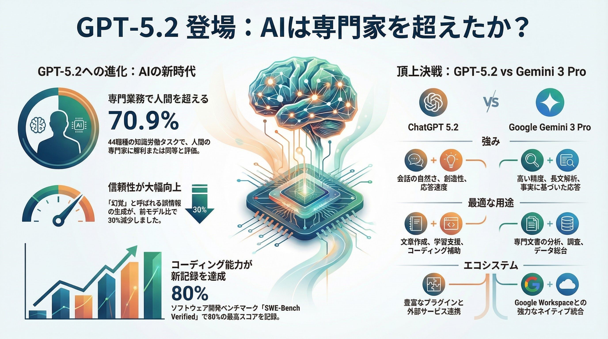

GPT-5.2：知識労働を加速する「業務エンジン」への進化
AIは「ツール」から「業務エンジン」へ
GPT-5.2は単なる便利なチャットAIではなく、調査・分析・資料化・実装といった「知識労働」をまとめて加速するための「業務エンジン」です。 意思決定と実行のスピードを劇的に上げ、競合に対する構造的な優位性を構築します。
🚀 GPT-5.2がもたらす3つの核心的価値
- 1. 統合と整理： 長文や複数資料（契約書、仕様書等）を横断的に解析し、要点や論点を短時間で抽出。
- 2. 直結する資料化： 調査結果をそのままスライドや表計算のたたき台へ。企画から資料化までのリードタイムを圧縮。
- 3. リスク管理と最大化： 信頼性は向上したが、「人の検証」を前提とした運用でリスクを抑えつつ効果を最大化。
部門別・活用インパクト
企画・マーケ・財務
市場・競合整理、提案書や稟議骨子の作成、モデル草案などで作業の初速を最大化。
開発・IT
設計検討、実装案作成、リファクタリング支援により、開発リードタイムを大幅短縮。
法務・知財・R&D
契約横断レビュー、論文大量要約、リスク条項抽出など、高負荷タスクを効率化。
推奨：成果を出すための「90日プラン」
知的生産プロセスを刷新し、確実に成果につなげるための導入ステップです。
1
優先業務の選定
頻度が高く工数が重い業務を3件選び、優先順位を設定。
2
PoC（概念実証）- 2週間
品質・工数・再現性・リスクを数字と具体例で評価。
3
ガバナンスと標準化
運用ルール（権限、監査、レビュー）を整備し、テンプレート化して展開。
💡 Point: 「作業を少し早くする」のではなく、「プロセスそのものを短縮する」ことを目指しましょう。